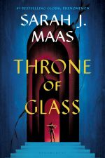

Book Reviews
On this page, you'll find a collection of my book reviews. I mostly read fantasy, romance, and young adult novels, but I also enjoy reading classics and fiction. I hope my reviews can help you find your next great read!
Throne of Glass by Sarah J. Maas

What VS Code thinks: Throne of Glass is the first book in a five-book series that follows the story of Celaena Sardothien, a young assassin in a kingdom ruled by a tyrannical king. The book is filled with action, adventure, and romance as Celaena navigates the complex politics of the kingdom and deals with her own personal struggles. I highly recommend this book to anyone who enjoys fantasy novels with strong female protagonists.